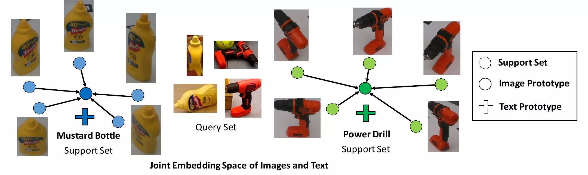
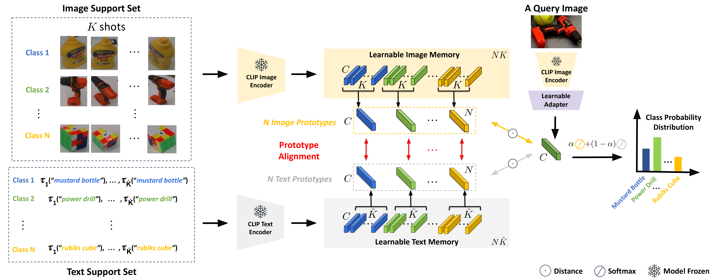
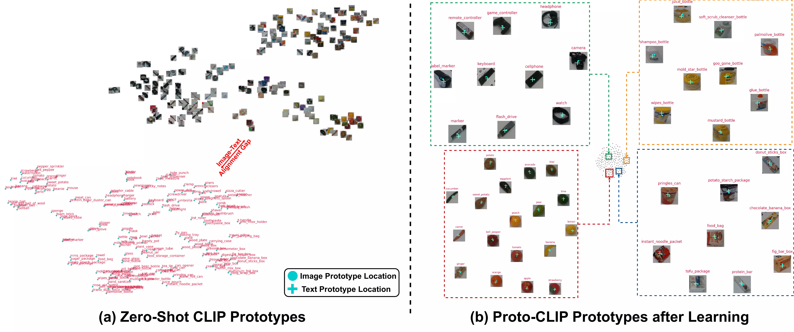

IEEE/RSJ International Conference on Intelligent Robots and Systems · IROS 2024

We propose a novel framework for few-shot learning by leveraging large-scale vision–language models such as CLIP. Motivated by unimodal prototypical networks, we introduce Proto-CLIP — which uses both image prototypes and text prototypes for few-shot classification.
Proto-CLIP adapts CLIP's image and text encoders jointly from a handful of few-shot examples and explicitly aligns image and text prototypes of corresponding classes. This cross-modal alignment is where the gain comes from — both modalities contribute to the final decision.
We validate the method on standard few-shot benchmarks and in the real world for robot perception.

The CLIP image and text encoders are frozen during training; the image memory, text memory, and adapter network are learned. Given a class name, τi returns the ith of K predefined text prompts.
Eight real-world scenes — swipe or use the arrows to browse Proto-CLIP predictions in the wild.
Image and text prototypes before and after fine-tuning.

(a)
Image and text prototypes from zero-shot CLIP are not aligned.
(b)
Aligned image and text prototypes from fine-tuned Proto-CLIP.
Barnes–Hut t-SNE visualization using fine-tuned Proto-CLIP trained on FewSOL [198 classes]. Image and text prototypes are aligned; shape-similar and semantically-similar objects cluster together (e.g. vegetables and fruits). Click the figure to zoom in.

Click a question to expand.
Please cite Proto-CLIP if it helps your research.
@INPROCEEDINGS{padalunkal2024protoclip,
title = {{Proto-CLIP: Vision-Language Prototypical Network for Few-Shot Learning}},
author = {P, Jishnu Jaykumar and Palanisamy, Kamalesh and Chao, Yu-Wei and Du, Xinya and Xiang, Yu},
booktitle = {2024 IEEE/RSJ International Conference on Intelligent Robots and Systems (IROS)},
doi = {10.1109/IROS58592.2024.10801660},
pages = {2594--2601},
year = {2024}
}Open an issue, join the discussion forum, or email Jishnu — jishnu.p@utdallas.edu
Supported by